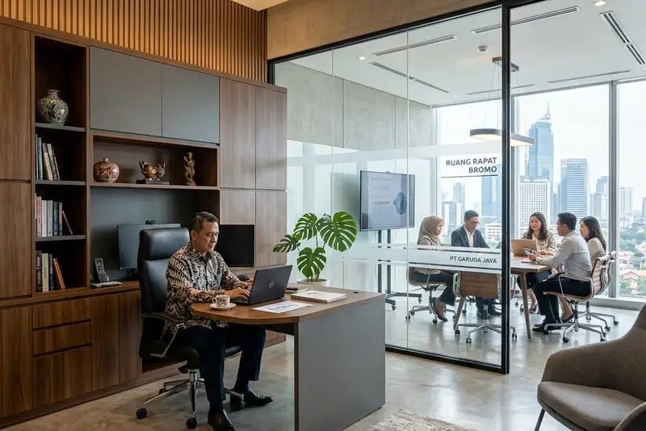

Daftar Isi
- Apa Itu Jasa Kontraktor Lemari Kantor Eksekutif?
- Untuk Siapa Layanan Ini Ditujukan?
- Mengapa Desain Wardrobe di Ruang CEO Membutuhkan Pendekatan Khusus?
- Bagaimana Standar Ergonomi Memengaruhi Kenyamanan Penggunaan Lemari Kantor?
- Kapan Kantor Membutuhkan Sekat Ruang Rapat Custom?
- Material Apa Saja yang Umum Digunakan?
- Bagaimana Proses Kerja Jasa Kontraktor Lemari Kantor Berlangsung?
- Apa Saja Kesalahan Umum yang Perlu Dihindari?
- Berapa Kisaran Biaya Pembuatan Lemari Kantor Custom?
- FAQ
Jasa kontraktor lemari kantor eksekutif menyediakan desain dan pembuatan wardrobe CEO, lemari kerja ergonomis, serta sekat ruang rapat custom yang disesuaikan dengan kebutuhan kantor modern.
- Layanan mencakup tiga area utama: wardrobe eksekutif, lemari kerja ergonomis, dan sekat ruang rapat.
- Desain disesuaikan dengan fungsi ruang, jumlah pengguna, dan gaya interior kantor.
- Material dipilih berdasarkan kebutuhan durabilitas, akustik, dan estetika.
- Proses kerja umumnya meliputi survei, desain 3D, produksi, dan pemasangan.
- Biaya bervariasi tergantung ukuran, material, dan tingkat kustomisasi.
Apa Itu Jasa Kontraktor Lemari Kantor Eksekutif?
Jasa kontraktor lemari kantor eksekutif adalah layanan desain dan pembuatan furnitur simpan custom untuk ruang kerja level manajemen, mulai dari wardrobe hingga lemari arsip. Layanan ini berbeda dari furnitur pabrikan karena ukuran, material, dan tata letak dirancang mengikuti dimensi ruangan serta kebiasaan kerja penggunanya.
Cakupan pekerjaan biasanya meliputi konsultasi kebutuhan, pengukuran ruangan, pembuatan gambar kerja, produksi di workshop, hingga instalasi di lokasi. Sebagian penyedia jasa juga menawarkan layanan purnajual seperti perbaikan engsel atau penyesuaian rak.
Untuk Siapa Layanan Ini Ditujukan?
Layanan ini paling relevan untuk perusahaan yang sedang membangun atau merenovasi ruang direksi, ruang meeting, maupun area kerja manajemen menengah ke atas. Kebutuhan umumnya muncul saat kantor pindah lokasi, melakukan rebranding interior, atau menambah kapasitas penyimpanan dokumen dan barang pribadi eksekutif.
Selain perusahaan korporat, firma hukum, kantor konsultan, dan kantor cabang bank juga sering menggunakan jasa ini karena kebutuhan penyimpanan dokumen rahasia dan tampilan ruang yang representatif di depan klien.
Mengapa Desain Wardrobe di Ruang CEO Membutuhkan Pendekatan Khusus?
Wardrobe di ruang CEO membutuhkan pendekatan khusus karena fungsinya bukan sekadar menyimpan pakaian, melainkan juga menjaga kerapian jas, tas kerja, dan aksesori bernilai tinggi agar tetap dalam kondisi baik. Detail seperti model hanger, tinggi rak, dan pencahayaan internal menjadi pertimbangan penting.
Pembahasan lebih rinci mengenai hanger jas custom dan rak jam tangan beludru dapat dilihat pada artikel Desain Wardrobe Khusus Jas dan Tas Executive di Ruang CEO.
Bagaimana Standar Ergonomi Memengaruhi Kenyamanan Penggunaan Lemari Kantor?
Standar ergonomi memengaruhi kenyamanan penggunaan lemari kantor karena menentukan seberapa mudah pengguna menjangkau, membuka, dan menata barang tanpa harus membungkuk atau meregangkan tangan secara berlebihan. Kedalaman lemari dan tinggi jangkauan tangan menjadi dua faktor yang paling sering diabaikan pada furnitur pabrikan massal.
Detail mengenai kedalaman standar 40 hingga 60 sentimeter dan tinggi jangkauan tangan yang nyaman dibahas lebih lanjut pada artikel Standar Ergonomi Tinggi dan Kedalaman Lemari Kantor yang Nyaman.
Kapan Kantor Membutuhkan Sekat Ruang Rapat Custom?
Kantor membutuhkan sekat ruang rapat custom ketika ruang meeting yang tersedia perlu dibagi menjadi beberapa ruang lebih kecil tanpa kehilangan privasi suara maupun fungsi kerja. Sekat ini umumnya menggabungkan fungsi partisi dengan elemen tambahan seperti papan tulis kaca.
Pembahasan lengkap mengenai penyekat kedap suara terintegrasi papan tulis kaca tersedia pada artikel Jasa Custom Lemari Sekat Pembatas Ruangan Rapat di Jakarta Barat.
Material Apa Saja yang Umum Digunakan?
Material yang umum digunakan pada lemari kantor custom meliputi multipleks, MDF, particle board, dan kombinasi kaca tempered untuk elemen sekat. Pemilihan material biasanya mempertimbangkan beban barang yang disimpan, kelembapan ruangan, dan anggaran yang tersedia.
Multipleks umumnya dipilih untuk komponen yang menahan beban berat seperti rak arsip, sementara MDF lebih sering digunakan pada panel pintu karena permukaannya yang halus dan mudah difinishing melamic atau duco. Particle board menjadi opsi dengan biaya lebih terjangkau namun ketahanannya terhadap kelembapan cenderung lebih rendah dibanding dua material sebelumnya.
Bagaimana Proses Kerja Jasa Kontraktor Lemari Kantor Berlangsung?
Proses kerja jasa kontraktor lemari kantor umumnya berlangsung melalui empat tahap utama, yaitu survei dan konsultasi, pembuatan desain, produksi di workshop, dan instalasi di lokasi.
Tahap survei bertujuan memastikan ukuran ruangan, akses masuk furnitur, dan kebutuhan penyimpanan pengguna. Setelah itu, desainer biasanya membuat gambar kerja atau visualisasi tiga dimensi untuk disetujui klien sebelum masuk tahap produksi. Instalasi dilakukan setelah komponen selesai difinishing, dengan durasi yang bervariasi tergantung kompleksitas desain.
Apa Saja Kesalahan Umum yang Perlu Dihindari?
Kesalahan umum yang sering terjadi antara lain memilih ukuran lemari tanpa mempertimbangkan jalur akses masuk ruangan, mengabaikan sirkulasi udara di dalam lemari sehingga rentan lembap, serta tidak memperhitungkan kebutuhan penyimpanan jangka panjang saat volume dokumen atau barang bertambah.
Kesalahan lain adalah memilih finishing tanpa mempertimbangkan intensitas penggunaan harian, sehingga permukaan lemari lebih cepat aus dibanding perkiraan awal.
Berapa Kisaran Biaya Pembuatan Lemari Kantor Custom?
Biaya pembuatan lemari kantor custom secara umum dipengaruhi oleh ukuran, jenis material, tingkat kerumitan desain, dan jenis finishing yang dipilih. Karena variasi ini cukup besar, kisaran biaya sebaiknya dikonfirmasi langsung melalui survei dan penawaran tertulis dari penyedia jasa.
Sebagai gambaran umum, biaya cenderung meningkat pada desain dengan banyak sekat internal, penggunaan kaca tempered, atau sistem penguncian tambahan seperti kunci digital.
Menurut pedoman ergonomi tempat kerja yang dipublikasikan oleh Kementerian Ketenagakerjaan Republik Indonesia, penataan furnitur kerja termasuk lemari penyimpanan sebaiknya memperhatikan jangkauan gerak pengguna agar tidak menimbulkan kelelahan fisik dalam jangka panjang. Referensi resmi dapat diakses melalui Kementerian Ketenagakerjaan RI.